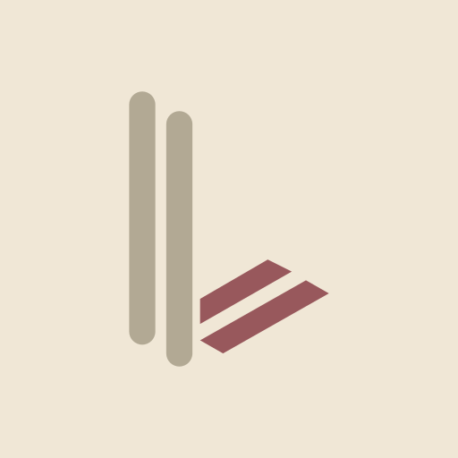
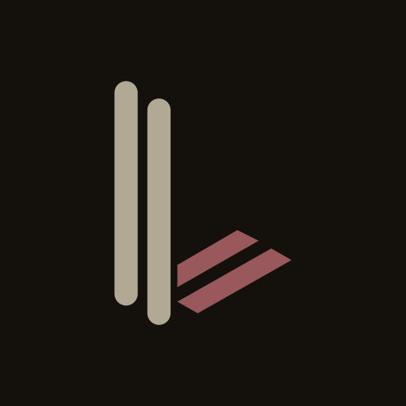
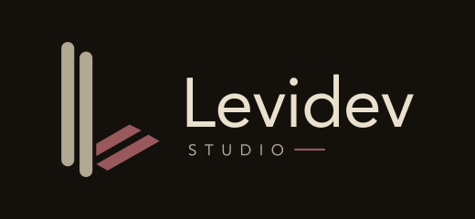
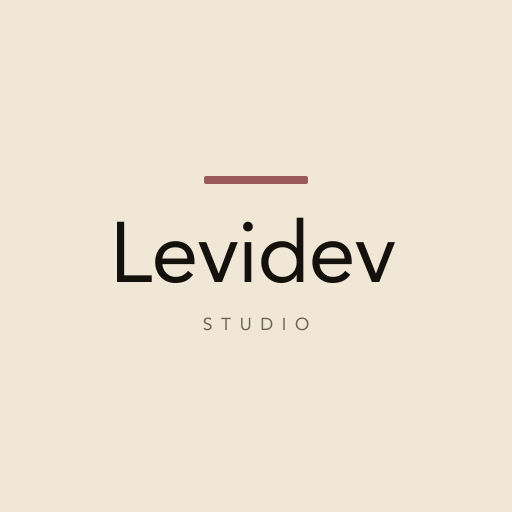
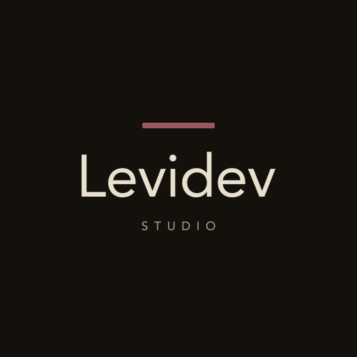
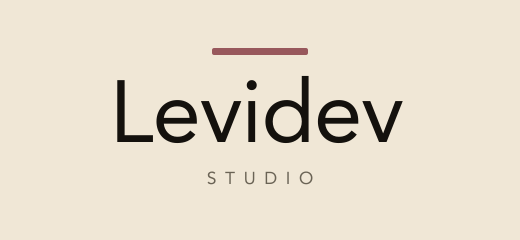
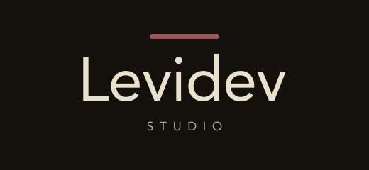

Two rounded stone pillars (#B2A994) and two isometric rose strokes (#98585C) in light, dark, and animated SVG.


Balanced combination mark pairing the original geometric symbol with outlined Avenir Roman typography and tracked STUDIO label.


Typographic lockup led by the signature rose bar (#98585C) above Levidev and tracked STUDIO in light, dark, and animated SVG.




904x256 README and profile banners with animated strokes, cursor blink, and the five-service studio index.